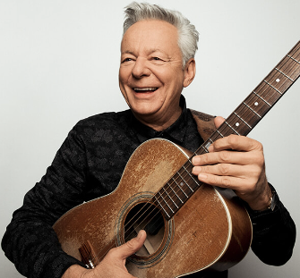

Personal Accomplishments
- Performed in School Talent Show
- Written songs
- Helped write lyrics for a friend's band
Tommy Emmanuel
Tommy Emmanuel
- Australian Guitarist, Singer, and Song Writer
- Known for his use of crazy fingerpick techniques in his songs
- Over 20 albums and singles
- One of my huge inspirations
Timeline
- Got my first guitar when I was 8
- Started teaching myself 3 years later during COVID Shut-Down
- Started to play a lot of the songs I loved
- Began to write lyrics and melodies more often
- Wrote my very first completed song in April of 2022
- Performed that song at a talent show
- Taught myself more complicated fingering, strumming, and techniques
- Started taking guitar lessons at The Piano Place from June-December
- Wrote more and more lyrics than ever
- Fast forward to today- working on my 6th song and learning more complicated things to play and do!
Insight
- Guitartuna- very easy tuning app!
- Ultimate Guitar Tabs- learned how to play some of my favorite songs from this. Very practical and easy to understand for beginners! | Ultimate Guitar
- GUITARZERO2HERO- AMAZING, EASY TO FOLLOW TUTORIALS! Has so many of my favorite songs and helps with many techniques. | GUITARZERO2HERO
Playing the guitar is something that has now become part of my character. I don't know what I'd do without it and not being to play. I love music, and it's always been such a big part of my life. I remember when I first started, it was practically impossible for me to even play a G-chord. Now, it's the very first thing I play when I warm up and the first chord I use to see if the guitar is in tune or not. It's crazy how much practice will do. I've had 5 major inspirations in my life, those being my dad, my grandpa, and one of my best friends. Then, of course, Tommy Emmanuel and Wilbur Soot. If you ever get a chance- play! Learn and have fun. Trust me, it'll be so fun.